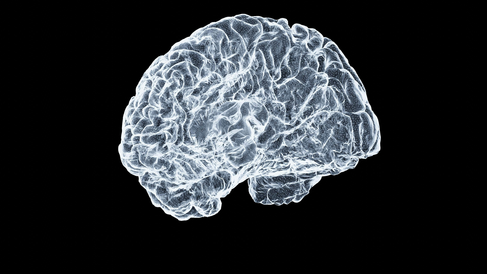
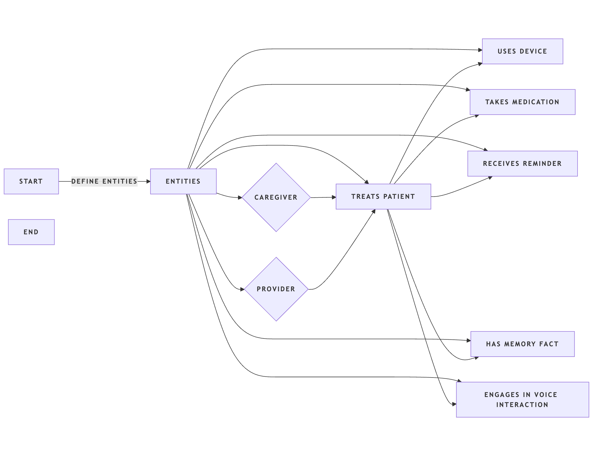
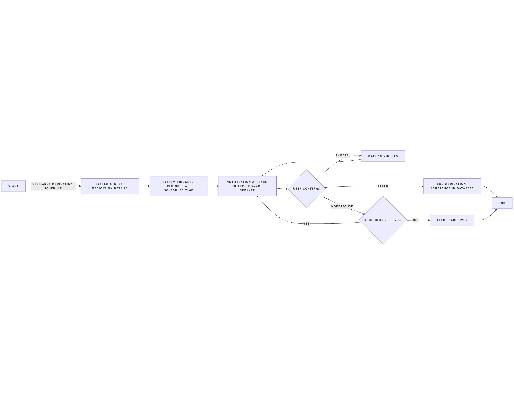

Product Management, UX Design, AI Integration, Prototyping
Portfolio Project • 2025
The journey of NeuroLark began with a personal experience: my grandmother was in the final stages of dementia, becoming almost childlike and needing constant assistance to perform basic tasks. This is the story of approximately 7 million americans. Patients struggle with memory lapses, medication adherence, and maintaining independence, while caregivers and providers lack real-time monitoring solutions. Current tools are insufficient, creating an opportunity for a dementia-focused AI voice assistant that supports memory, routine, and safety.
| Name | Age / Role | Pain Points | Goals |
|---|---|---|---|
| Margaret Chen | 72 / Dementia Patient | Forgets meds, appointments, familiar faces | Stay independent, safe, and reduce family burden |
| David Rodriguez | 48 / Caregiver (Son) | Distance monitoring, work-life balance | Ensure father's safety, peace of mind, early alerts |
| Dr. Sarah Kim | 45 / Geriatrician | Limited monitoring between visits | Better patient outcomes, data-driven decisions |
Initial Research: I began exploring dementia care challenges, reviewing existing memory aids, digital assistants, and caregiving solutions. I identified gaps in solutions that work offline, provide personalized support, and integrate both patient needs.
Problem Recognition: There is a clear need for a memory support system that not only reminds patients but also empowers caregivers with actionable insights, helping patients live more independently at home.
Discovery
Research
Design
MVP
Testing
Delivery
NeuroLark is a conceptual voice-first assistant designed to preserve dignity and independence for dementia patients. Core MVP features include offline voice recognition, personalized memory bank, medication management, emergency support, and routine guidance.
NeuroLark is an AI-powered voice assistant that continuously listens to the patient throughout the day. It leverages information provided by the patient or their relatives about the patient’s past, routines, and preferences before cognitive decline begins. Using this information alongside real-time activity data, NeuroLark assists patients with memory and daily tasks, helping them maintain independence.
When the patient encounters a situation requiring memory support—such as forgetting their birthday, address, or an important appointment—the voice assistant activates automatically and provides the answer securely through an earpiece. The earpiece is biometrically linked to the patient to ensure privacy and safety.
In addition to reactive support, NeuroLark delivers timely reminders for medications, routines, and other daily activities necessary for patient well-being. The system operates across multiple devices, creating a “hive mind” that shares the same knowledge base, ensuring consistent assistance regardless of the device used.
NeuroLark is technically achievable using compact offline AI models (e.g., Whisper for speech + LLaMA/Mistral for reasoning) that can run locally on modern smartphones and smart speakers. Always-on voice listening is enabled with wake-word detection and efficient transcription. Relatives can preload key patient history (birthdays, addresses, medications), which is stored securely and accessed for reminders or queries. Biometric earpieces ensure only the patient receives private outputs. Data can sync across devices using encrypted local cloud, creating a consistent "hive-mind" experience.
Dementia care is a growing need worldwide. Current solutions like Alexa or Google Assistant lack medical tailoring and privacy safeguards. NeuroLark bridges healthcare and empathy with technology, offering peace of mind to families and independence to patients. The system could expand into smart homes, wearables, and healthcare networks for broader impact.
Key flows include medication reminders and memory queries. Wireframes illustrate caregiver dashboard, setup flow, and patient interactions.

Margaret receives a voice reminder: "It's time for your 9 AM medication."
She confirms via voice, and NeuroLark logs the adherence.
The system repeats the reminder twice and notifies caregiver if no response.
Margaret looks at a family photo and asks, "Who is this person?" NeuroLark uses photo recognition and the memory bank to respond: "That's your daughter Sarah. She visited last Sunday and brought flowers." Additional context or stories can be provided for emotional reinforcement.
| Scenario | Situation | Action | Outcome |
|---|---|---|---|
| Morning Routine Reminder | Patient wakes up confused about the day and schedule. | NeuroLark greets them, reminds them of the day and morning medications. | Structured start to the day, cognitive tracking begins. |
| Medication Adherence Alert | Caregiver worries patient might miss a dose while they are away. | NeuroLark reminds patient and notifies caregiver if no response. | Improved medication adherence, peace of mind for caregivers. |
| Memory Query Assistance | Patient sees a family photo and asks, "Who is this?" | NeuroLark identifies person, provides context, shares related memories. | Emotional support and memory reinforcement. |
| Evening Routine Guidance | Patient forgets bedtime rituals and hygiene. | NeuroLark guides patient through bedtime activities. | Consistent routines and improved sleep. |
| Emergency Assistance | Patient feels disoriented or unsafe. | NeuroLark alerts caregiver/emergency contacts with location. | Quick intervention reduces risk, ensures safety. |
| Cognitive Exercise & Memory Reinforcement | Patient has quiet afternoon with limited stimulation. | NeuroLark suggests exercises, storytelling, or memory prompts. | Supports cognitive health, engagement, and emotional well-being. |
NeuroLark differentiates itself with dementia-specific AI, offline-first functionality, a voice-only interface, and real-time caregiver integration.
GrandPad Tablet: Senior-friendly interface, family connection; limited AI, requires screen interaction.
CarePredict Wearable: Health monitoring, fall detection; no voice AI, expensive.
Claris Companion: 24/7 monitoring, professional caregivers; human-based, not AI, high cost.
Amazon Alexa: Voice interaction and reminders; not dementia-specific, requires internet.
WHOOP (acquired tech): Wearable AI for health monitoring; could overlap with NeuroLark’s health insights.
Apple Health: Medication reminders; no voice AI, not dementia-focused.
Life Alert: Emergency response; no daily support or personalization.
Targeting dementia patients and caregivers in English-speaking countries, NeuroLark is positioned as a subscription-based AI assistant that supports daily caregiving and patient independence.
The go-to-market strategy involves a phased rollout: Phase 1 focuses on direct-to-consumer adoption through caregivers and families, Phase 2 expands into healthcare partnerships, and Phase 3 explores integration with payers and health systems. Success will be measured by user adoption, voice interaction accuracy, reduction in caregiving burden, and overall improvements in patient engagement.
NeuroLark demonstrates empathy for underserved users, strategic market thinking, and technical feasibility considerations.
Next steps include: